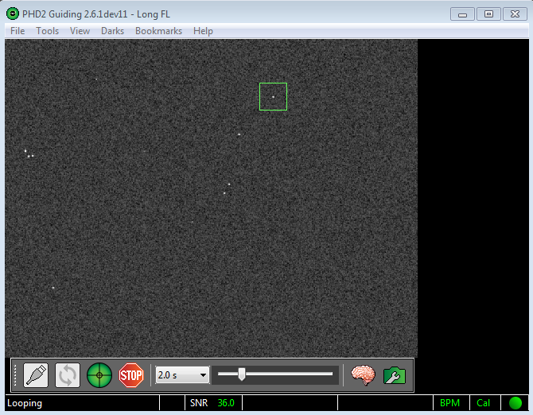

メインスクリーン
PHD2のメインウィンドウは、使用して明快を容易にするために設計されています。その目的は、ガイドを開始および制御するための相互作用の迅速かつ自然なシーケンスをサポートすることです。これを行うための基本的な手順は次のとおりです。
- ガイドカメラに接続してマウント
- 一連のガイド露出を開始して、視野で利用可能な星を確認します
- ガイド星を選択して、ガイドを調整します
- さまざまな表示ツールを使用してターゲットスターをガイドし続け、状況を確認します
- 必要に応じてガイドを停止および再開する

画面の大部分は、ガイドカメラからのスターフィールドの表示で占められています。ディスプレイのサイズ、明るさ、コントラストが自動的に調整されるため、利用可能な星をはっきりと見ることができます。ただし、これらの調整は表示目的でのみ行われます。内部的には、PHD2
は、ガイドの精度を最大化するために、未調整の未調整データで動作します。このディスプレイは、単にクリックするだけでガイドスターを選択するためにも使用されます。スライダーコントロールを確実に調整して、フィールドで最も暗い星でも見えるようにする必要があります。
基本制御
画面の下部近くにメインコントロールがあります。 PHD2はこれらのボタンとスライダーによって大部分が制御され、ウィンドウの上部に追加のプルダウンメニューがあり、より詳細な機能を使用できます。ウィンドウ内で左から右に移動すると、主なボタンは次のとおりです。
- USBコネクタアイコン-カメラへの接続とデバイスのマウントに使用
- ループアイコン-ガイドカメラで繰り返し露光を開始（「ループ」）するために使用され、結果の各画像（ガイドフレーム）がメインウィンドウに表示されます。その後ガイドが開始された場合、「ループ」アイコンをもう一度クリックすると、ガイド露出を続けながらガイドを一時停止します。
- PHD2 /ガイドアイコン-必要に応じてキャリブレーションを開始し、選択した星のガイドを開始するために使用します。
- 停止アイコン-ガイドとループの両方を停止するために使用
停止アイコンの右側には、露出時間のプルダウンリストがあります（0.01秒-15秒）。このコントロールを使用して、ガイドカメラの露出時間をすばやく設定します。カメラが露出時間をサポートしていない場合、PHD2はその時間をエミュレートするために最善を尽くします。たとえば、短時間露出のウェブカメラを使用する場合、実際の最大露出時間は1/30秒に過ぎない可能性があります。希望の露出時間として1秒を選択すると、PHD2は自動的に1秒間画像を取得し、その場で積み重ねて、ガイド用の合成画像を作成します。
右側の次のコントロールは、画面のストレッチとコントラストを調整するためのスライダーで、基本的には「ガンマ」調整です。 PHD2
は、画像内の最も暗いピクセルと最も明るいピクセルを考慮してディスプレイを自動的に調整し、スライダーを使用してディスプレイを微調整し、視野内の星をよりよく表示します。これは、たとえば、ガイドカメラに初めて焦点を合わせようとしていて、焦点の合っていない大きな星の画像を見る必要がある場合に便利です。ガンマスライダーを動かしても、表示が明るくなったり暗くなったりするだけです。PHD2は
常にカメラの生のピクセルをガイドに使用し、ガンマスライダーを動かしてもガイドには影響しません。「完全に白」または「完全に黒」の表示
ガンマスライダーの横にあるのは「頭脳ボタン」です。このボタンは、PHD2のガイド操作を詳細に調整するための詳細ダイアログを表示します。プログラムの重要な設計目標は、これらのパラメーターを変更する必要性を最小限にすることですが、「脳」を心配する必要はありません。ここでは、ガイド結果を大幅に改善し、生活を楽にする調整が利用できます。一定期間、このダイアログを見て、それがあなたのために何ができるかを学ぶべきです。
この行の右端のコントロールは、「カメラプロパティ」ボタンです。特定のカメラによっては、このボタンを有効にして、カメラに固有の設定ダイアログへのアクセスを提供できます。ただし、ゲインやビニングなどの一般的なカメラプロパティは、通常、PHD2詳細ダイアログの[カメラ]タブで設定されます。ボタンが無効になっている場合、利用可能なプロパティはPHD2 Advanced Dialogで設定できます。
メニュー
メインガイダーディスプレイの上のプルダウンメニューは、さまざまな機能にアクセスするために使用されます。これらについては、ダークフレームと不良ピクセルマップ、ツールとユーティリティ、および視覚化 で説明されていますこのヘルプドキュメントのセクション。
ステータスバー
メインウィンドウの下部にあるステータスバーは、ガイド操作の追跡に役立つメッセージとステータス情報を表示するために使用されます。
ステータスバーの中央付近には、ガイドスターの現在の状態を示すフィールドがあります。SNR値が10を下回った場合、その値は「失われた星」イベントが発生する可能性があるという警告として黄色で表示されます。ガイド星が飽和している場合、SNRの左側のフィールドには、赤色の書体で「飽和」と表示されます。
スターステータスフィールドの右側には、最新のRAおよびDecガイドコマンドを示す2つのテキストフィールドがあります。これらは、ガイドパルスのサイズ、ピクセル単位の補正量、および方向を示す矢印を示します。矢印は通常のコンパスの規則に従います：Decの上下は北/南に対応し、RAの左/右は西/東に対応します。この情報はすべてログファイルにキャプチャされ、さまざまなグラフィカルツールに表示されます。これらは、ガイドのパフォーマンスを視覚化するために使用する必要があるものです。ただし、これらのステータスフィールドは、何かが異常に動作している場合の視覚的な手がかりをすばやく提供します。
ステータスバーの右端のパネルには、PHD2：の現在の状態に関する視覚的な手がかりを提供するアイコンが表示されます。これらのアイコンは、現在のステータスのダッシュボードビューを提供するために色分けされており、次の意味があります。
「暗い」-赤は暗いライブラリも不良ピクセルマップも使用されていないことを意味し、緑はいずれかが使用中であることを意味します。不良ピクセルマップを使用している場合、テキストには「ダーク」ではなく「BPM」と表示され
ます。「Cal」-キャリブレーションの状態を示します。赤はマウントが現在キャリブレーションされていないことを意味し、黄色はキャリブレーションがあるがスコープのポインティング位置を考慮して自動的に調整されていないことを意味します。これは、PHD2でASCOMまたは「aux」マウント接続を使用していない場合に発生します。アイコンが黄色の場合、通常、スコープを別の赤緯位置に移動するときに再調整する必要があります。
「ボール」-プロファイル内のすべての機器が正常に接続されたかどうかを示します。ボールが黄色の場合、
これらのステータスアイコンのいずれかにマウスカーソルを合わせると、現在の状態に関する詳細が表示されます。